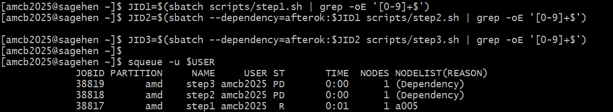

SLURM Pipeline Basics
Last updated on 2026-08-24 | Edit this page
Estimated time: 40 minutes
Overview
Questions
- How do I automate job submission to SLURM?
- What are job dependencies and how do I use them?
- How do I write reproducible SLURM job scripts?
Objectives
- Understand SLURM job dependencies for sequential workflows
- Write bash scripts that run reproducibly on compute nodes
- Use job arrays to parallelize independent tasks
- Handle errors and verify job completion
The HPC Challenge
On a personal machine, your entire analysis runs on your laptop:
On an HPC cluster like Sagehen with many cores available, you want to parallelize:
- Download data (1 job)
- Process samples in parallel (100 independent jobs)
- Merge results (1 job)
- Run analysis (1 job)
- Generate 50 different figures in parallel (50 jobs)
But each job must wait for its dependencies:
Download Data
|
Process Sample 1 Process Sample 2 Process Sample 3 ...
| | |
Merge Results
|
Analysis
|
Figure 1 Figure 2 Figure 3 ...How do you coordinate this? SLURM job dependencies.
SLURM Job Dependencies
SLURM has a --dependency flag that lets one job wait for
another:
BASH
# Submit a job that will run after job 12345 completes successfully
sbatch --dependency=afterok:12345 step2.sh
# Submit a job that will run after job 12345 completes (regardless of success)
sbatch --dependency=after:12345 step2.sh
# Submit a job that will run after ALL of multiple jobs complete
sbatch --dependency=afterok:12345,12346,12347 step2.shMaking SLURM Scripts Reproducible
A reproducible SLURM job script follows this pattern:
BASH
#!/bin/bash
#SBATCH --job-name=my-job
#SBATCH --output=logs/%j.log
#SBATCH --error=logs/%j.err
#SBATCH --time=01:00:00
#SBATCH --cpus-per-task=4
#SBATCH --mem=8G
# Set bash to fail if any command fails
set -euo pipefail
# Source your environment
source /etc/profile.d/modules.sh
module load miniconda3
conda activate my-project
# Define paths
WORK_DIR=$(pwd)
DATA_IN="${WORK_DIR}/data/processed/sample_${SLURM_ARRAY_TASK_ID}.csv"
RESULTS_OUT="${WORK_DIR}/results/analysis_${SLURM_ARRAY_TASK_ID}.csv"
# Verify inputs exist
if [ ! -f "$DATA_IN" ]; then
echo "ERROR: Input file not found: $DATA_IN"
exit 1
fi
# Create output directory
mkdir -p "${RESULTS_OUT%/*}"
# Run analysis
echo "Starting analysis on $(hostname) at $(date)"
python src/analyze.py "$DATA_IN" "$RESULTS_OUT"
# Verify output was created
if [ ! -f "$RESULTS_OUT" ]; then
echo "ERROR: Output file was not created: $RESULTS_OUT"
exit 1
fi
echo "Job completed at $(date)"Key points: 1. set -euo pipefail: Exit
immediately if any command fails 2. #SBATCH
directives: Request resources clearly 3. Path
verification: Check that inputs exist before processing 4.
Output verification: Check that output was created
successfully 5. Logging: Know what node ran the job and
when
SLURM Job Arrays for Parallel Processing
When you have many independent jobs (process 1000 samples), use job arrays:
BASH
#!/bin/bash
#SBATCH --array=1-1000 # 1000 parallel jobs
#SBATCH --time=00:30:00
#SBATCH --cpus-per-task=2
#SBATCH --mem=4G
# SLURM_ARRAY_TASK_ID is automatically 1, 2, 3, ..., 1000
SAMPLE_ID=$SLURM_ARRAY_TASK_ID
INPUT="data/processed/sample_${SAMPLE_ID}.csv"
OUTPUT="results/analysis_${SAMPLE_ID}.csv"
python src/analyze.py "$INPUT" "$OUTPUT"Submit:
Check status:
Error Handling and Verification
Real workflows fail. Systems crash. Data corruption happens. Robust workflows detect and handle these:
BASH
#!/bin/bash
#SBATCH --time=01:00:00
set -euo pipefail
# Function to clean up on exit
cleanup() {
local exit_code=$?
if [ $exit_code -ne 0 ]; then
echo "Job failed with exit code $exit_code"
exit $exit_code
fi
}
trap cleanup EXIT
# Verify inputs
INPUT="$1"
if [ ! -f "$INPUT" ]; then
echo "ERROR: Input file $INPUT not found" >&2
exit 1
fi
# Run analysis with error handling
if python src/analyze.py "$INPUT" "$OUTPUT" 2>&1 | tee analysis.log; then
echo "Job completed successfully at $(date)"
else
echo "ERROR: Analysis script failed" >&2
exit 1
fiDebugging Failed Jobs
When a job fails:
-
Check the log file:
-
Check SLURM error details:
-
Run interactively to debug:
Exercise: Create a SLURM Job Script with Dependencies
Create three scripts that simulate a three-step pipeline:
BASH
mkdir -p scripts logs
# Step 1: Preprocessing
cat > scripts/step1.sh << 'EOF'
#!/bin/bash
#SBATCH --job-name=step1
#SBATCH --output=logs/step1.log
#SBATCH --time=00:05:00
set -euo pipefail
echo "Step 1: Preprocessing"
mkdir -p results
echo "Processed data" > results/step1_output.txt
echo "Step 1 completed at $(date)"
EOF
# Step 2: Analysis (depends on Step 1)
# Step 3: Visualization (depends on Step 2)Submit them with dependencies:
BASH
$ sbatch scripts/step1.sh
Submitted batch job 48201
$ JID1=48201
$ sbatch --dependency=afterok:$JID1 scripts/step2.sh
Submitted batch job 48202
$ JID2=48202
$ sbatch --dependency=afterok:$JID2 scripts/step3.sh
Submitted batch job 48203
$ squeue -u $(whoami)
JOBID PARTITION NAME ST TIME NODES
48201 amd step1 R 0:02 1
48202 amd step2 PD 0:00 1 (Dependency)
48203 amd step3 PD 0:00 1 (Dependency)
The scripts’ SBATCH headers don’t set--partition, so all
three jobs land on amd – Sagehen’s default partition. Add
--partition=short (or gpu) when a step needs a
different one. Steps 2 and 3 show PD (pending) with reason
(Dependency) until their prerequisite job finishes
successfully.
- SLURM job dependencies enable reproducible, sequential workflows on HPC
- Use
--dependency=afterok:JOBIDto make one job wait for another to complete successfully - Job arrays parallelize independent tasks across compute nodes
- Robust scripts include input verification, error handling, and output verification
- Debug failed jobs by checking logs, using
sacct, and running interactively withsalloc